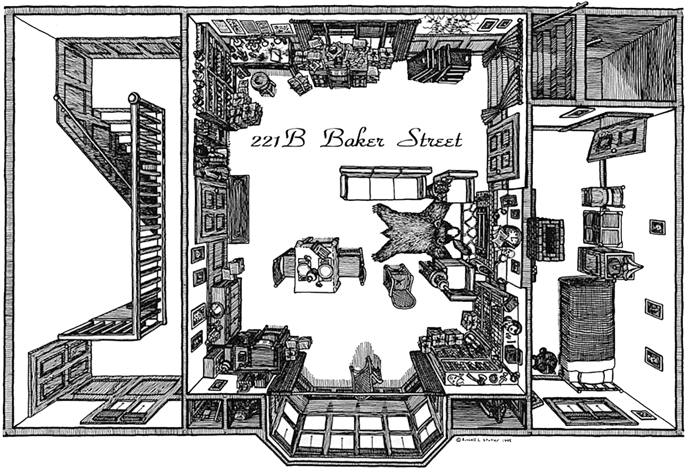

221B Baker Street is the London address of the fictional detective Sherlock Holmes, created by the writer Sir Arthur Conan Doyle.
At the time the Holmes stories were published, addresses in Baker Street did not go as high as 221. In fact, number 85 was the last number of the street in 1890.
Baker Street was later extended, and in 1932 the Abbey National Building Society moved into premises at 219–229 Baker Street. For many years, Abbey National employed a full-time secretary to answer mail addressed to Sherlock Holmes.